IB Docs (2) Team
IB Docs (2) Team

Unit 3.5 Government management of the economy – monetary policy
The government can use demand management or a demand-side approach where it affects aggregate demand in the economy to achieve its macroeconomic objectives. The government demand management approach can be broken down into monetary policy and fiscal policy. This chapter considers how monetary policy can be used to try and achieve the government's macroeconomic objectives.
- Aims of monetary policy
- Control of money supply and interest rates by the central bank
- Monetary policy to achieve different macroeconomic objectives
- Money creation by commercial banks (HL)
- Tools of monetary policy (HL)
- Determination of interest rates through the demand and supply for money (HL)
- Real and nominal interest rates
- Expansionary monetary policy
- Contractionary monetary policy
- Evaluation of monetary policy
Revision material
 The link to the attached pdf is revision material from Unit 3.5 Government management of the economy – monetary policy. The revision material can be downloaded as a student handout.
The link to the attached pdf is revision material from Unit 3.5 Government management of the economy – monetary policy. The revision material can be downloaded as a student handout.
The aims of monetary policy
Governments have different economic tools they can use to target their macroeconomic objectives:
- Sustainable economic growth
- Low unemployment
- External balance on the current account balance of payments
- Low inflation or price stability
The government can use demand management or a demand-side approach where it affects aggregate demand in the economy to achieve these objectives. The government demand management approach can be broken down into monetary policy and fiscal policy. This chapter considers how monetary policy can be used to try and achieve the government's macroeconomic objectives.
Understanding monetary policy
Monetary policy is where the government uses interest rates and the supply of money to achieve its macroeconomic objectives. For example, the central bank of a country uses interest rates and the supply of money to manage the rate of inflation.
Importance of the central bank
The central bank in an economy is the key institution the government uses to apply monetary policy. In the US the central bank is the Federal Reserve, in the EU it is the European Central Bank and in Japan, it is the Bank of Japan. In recent years many countries have made their central bank independent from the government so it can apply monetary policy without too much political influence on decision-making. The central bank applies monetary policy by using the following tools:
- Base interest (discount) rates
- Quantitative easing
- Open market operations
- Minimum reserve requirements
Determining the supply of money - credit creation (HL)
Credit creation is the way commercial banks in an economy create money from the funds deposited with them. Credit creation has an important influence on the money supply of the economy and the way monetary policy works. The process of credit creation is based on the following assumptions:
- One bank represents the whole banking system. In reality, the banking system is dominated by a number of large banks, but in this model, the whole banking system is considered to operate as one bank.
- The firms and households that deposit money in banks will only withdraw a certain proportion at any one time to make transactions. This is realistic if you think about the way most people use their money. For example, we can assume that most customers will only withdraw 20 per cent of their deposit at any one time.
- A minimum reserve asset ratio requirement is set based on the withdrawal rate of the bank's customers. In this case, it is 20 per cent.
- The money withdrawn from the bank will be redeposited bank in the bank and not held outside the banking system.
- Banks make a profit by charging a higher rate of interest to borrowers than they pay to depositors. Thus, banks have an incentive to lend as much as it is safe for them to do.
The credit creation process
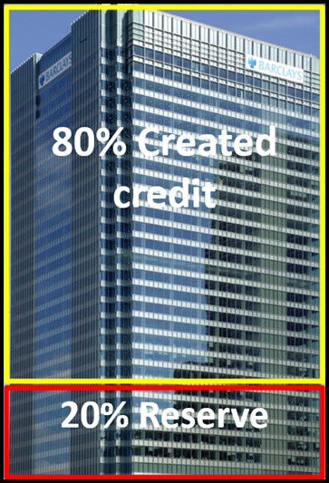
Based on these assumptions This is how credit creation works in an economy where a single bank represents the whole system:
Step 1 An initial deposit of $200,000 in cash is put into the bank.
Step 2 The bank can use the $200,000 as a 20% reserve asset to cover cash withdrawals. In this case, it will use $40,000 of the initial $200,000 deposit to cover withdrawals from the customer who made the $200,000 deposit. The remaining $160,000 can be used to cover cash withdrawals from any loans the bank makes.
Step 3 An individual asks for a loan from the bank to buy a house for $200,000. The banks will make this loan because they can use $40,000 of the $200,000 initial deposit as a 20 per cent reserve to cover a withdrawal that might occur from the $200,000 loan made. After the loan is made and the borrower buys the house, the individual they bought the house from will deposit the $200,000 back in the bank. As a result of this, the bank has created $200,000 of credit and this money is now circulating in the economy.
Step 4 A firm applies for a $600,000 loan from the bank to buy a new machine. The bank has $120,000 of the initial deposit left ($200,000 - $80,000) to cover the 20% reserve asset ratio requirement for the loan for the $600,000 machine. Another $600,000 has been created with this loan so the total amount of credit creation of is $800,000 ($200,000 + $600,000).
Step 5 The bank will not make any new loans now because it has reached its 20% reserve asset ratio limit where it has $200,000 backing $1,000,000 of funds ($200,000 initial deposit + $200,000 house loan + $600,000 machine loan).
The money multiplier
The money multiplier is the amount of credit that can be created from a certain quantity of money deposited. The money multiplier can be calculated by using the equation:
1 / minimum reserve requirement = money multiplier
1 / 0.2 = 5
5 x $200,000 = $1,000,000
This example of credit creation shows how an increase in bank deposits of $200,000 can lead to a $1,000,000 ($200,000 deposit plus $800,000 created credit) increase in the money supply when the reserve asset ratio is 20 per cent.
Data from the Australian central bank, the Reserve Bank of Australia showed that businesses and households borrowed record amounts last month. Australia's domestic credit increased 4.9% in June, compared with an increase of 5.6% in the previous month. Australia's domestic credit growth has averaged 8.6%, over the last 20 years.
Whilst higher borrowing in Australia helps fund increased consumption and investment it does increase household and business debt in the country and can put a strain on the banking system. If people lose their jobs and businesses fail, then the resulting bad debts for banks can lead to losses for banks, as firms and households cannot repay their loans.
 Worksheet questions
Worksheet questions
Questions
a. Define the term monetary policy. [2]
Monetary policy is where the government uses interest rates and the supply of money to achieve its macroeconomic objectives.
b. Outline how increased borrowing leads to greater consumption and investment in the Australian economy. [2]
- Consumption spending on 'big ticket' items such as cars and home improvements is often funded by borrowing.
- Investment spending such as new buildings and machinery is often funded by borrowing.
c. The minimum reserve requirement in the Australian economy is 8% and $40 million is deposited in the Australian banking system. Calculate the increase in credit. [2]
1/0.08 x $40 million = $500 million
d. Explain the likely effects of a decrease in interest rates on a country with a deflationary gap. [10 marks]
Answers might include:
- Definitions of interest rate and deflationary gap.
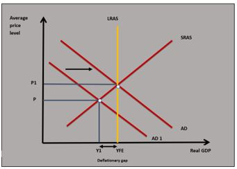
- A diagram to show aggregate demand increasing and the deflationary gap being closed. This is shown in the diagram as AD shifts to AD1.
- An explanation that a decrease in interest rates will increase consumption expenditure because household borrowing costs fall and the incentive to save is reduced and this will reduce savings.
- An explanation that lower interest rates will increase investment expenditure because business interest costs are reduced and businesses receive less interest from funds they keep in the bank.
- An explanation that lower interest rates may cause a country’s exchange rate to depreciate which decreases export prices and increases import prices. This could cause net exports to increase.
- An explanation that a rise in consumption, investments next exports caused by a decrease in interest rates will increase aggregate demand and move national income closer to full employment income – closing the deflationary gap.
- An example of a country where interest rates have been reduced to close a deflationary gap such as a reduction in US interest rates during the Covid19 pandemic.
Investigation
Research current changes in borrowing by firms and households in a country and think about the impact it has on that country’s banking system.
Interest rates
The influence of the base rate
The base interest rate has an important influence over the interest rates set throughout the economy by banks and other lending institutions. The base rate is the interest rate charged by the central bank to the commercial banking sector. The financial system in the economy is set up so that commercial banks need to continuously borrow money from the central bank. If the central banks change the base rate the commercial banks will pay a different rate and they will then pass on this change in interest rate to their customers and the interest rate change will filter through the economy. For example, if the base rate is increased it means commercial banks have to pay more to the central bank, they will then pass the interest rate increase to their customers and interest rates throughout the economy (personal loans, mortgage and credit card interest rates) will increase.
Market interest rates
The other important influence on interest rates in the economy is the interest rates set in the money markets. The market rate of interest is determined by the demand and supply of money.
Demand for money
Firms and households demand money because they need to make transactions when they buy goods and services. There is a negative relationship between the rate of interest and the demand for money because as the rate of interest increases the quantity demanded of money falls as the cost of borrowing increases. This means firms and households borrow less and therefore demand less money to buy goods and services. This is particularly true of goods such as cars and goods associated with home improvements. As interest rates decrease the quantity demand for money increases as the cost of borrowing decreases. The demand for money is shown in diagram 3.38.
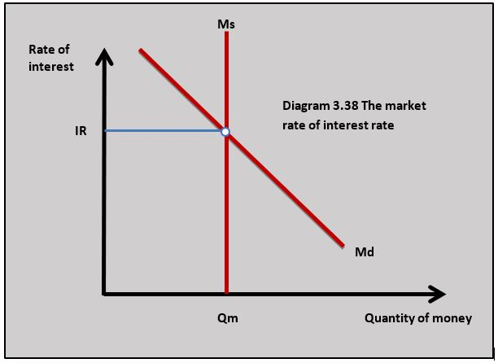
Supply of money
The supply of money in the economy is set by the central bank and the banking system. The central bank controls the money issued to the banking system and the banking system creates credit that determines the amount of money circulating in the economy. The supply of money is fixed in a given time period and is perfectly inelastic. This is shown in diagram 3.38.
Equilibrium interest rate
The equilibrium rate of interest rate is set where the demand for money equals the supply of money in diagram 3.38.
Changes in the market rate of interest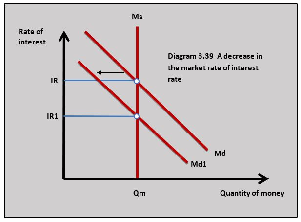
The market interest rate will change if there is either a change in the demand for money or the supply of money. For example, if there is a fall in aggregate demand in a recession there will be fewer transactions and the money demand curve will fall from Md to Md1 causing a fall in the market of interest. This is shown in diagram 3.39.
Nominal and real interest rates
Nominal interest rates make no allowance for inflation. Most of the economic data used to report the state of the economy use interest rates stated in nominal terms. If a central bank increases interest rates from 1 per cent to 2 per cent this will lead to an increase in the nominal interest rate. The real interest rate makes an allowance for inflation. It is calculated as:
Nominal interest rate – inflation rate = real interest rate
If a country has a nominal interest rate of 5 per cent and the inflation rate is 2 per cent, the real interest rate is:
5% - 2% = 3%
The real interest rate is used by firms and households to give them information about the returns they pay or receive on money borrowed or saved. For example, if an individual saves money at a nominal interest rate of 4 per cent and inflation is 5 per cent they know the real value of their savings will be falling.
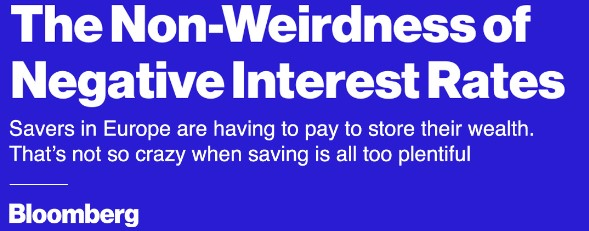
In 2014 the European Central Bank used negative interest rates by cutting its deposit rate to -0.1%. The Bank of Japan adopted a similar policy in 2016 cutting interest rates to -0.1% to increase bank lending and also to stop the value of the Yen appreciating. The strong Yen was hurting Japanese exporters. One question remains: how long might it be before commercial banks offer negative interest rates to their retail customers?
Questions
a. Define the term base interest rate. [2]
The base interest rate is the rate of interest charged by the central bank to the commercial banks.
b. Explain the impact of the European Central Bank cutting its base rate to -0.1% on consumption in the European Union. [4]
If the ECB reduces its base rate to -0.1% this means European commercial banks will have to pay interest to keep their money in the ECB and this acts as an incentive to reduce their own rates and lend more money to households. If households have to pay lower interest rates they will find their borrowing costs fall and their returns from saving will decrease. This will lead to an increase in consumption.
c. Explain how the market rate of interest rate decreases using the demand and supply of money. [10]
Answers might include:
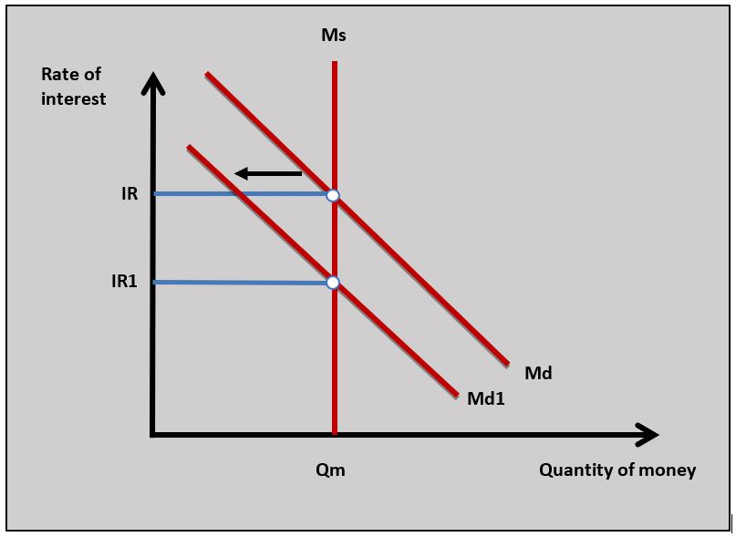
- Definitions of interest rate, demand for money, supply of money.
- A diagram to show a fall in the market interest rate in a country.
- An explanation that the market rate of interest is determined by the demand and supply of money which is IR at Qm in the diagram.
- An explanation that a fall in demand for money in a recession or an increase in the money supply from the banking system leads to a fall in the market rate of interest.
Investigation
Find out about situations where central banks used negative interest rates.
The tools of monetary policy (HL)
The government has a number of monetary tools it can use to achieve its policy objectives. In many countries, the government sets the direction of monetary policy through its macroeconomic objectives and the central bank makes decisions on how the different policy tools are applied.
The minimum reserve requirement
The minimum reserve requirement is the quantity of cash banks must hold as a reserve or keep in deposit at the central bank. It is a safety net that protects banks in situations where depositors withdraw more money from their accounts than they normally do and threaten the bank's liquidity (the amount of cash it holds). If the central bank wants to reduce the money supply it can increase the minimum reserve requirement of commercial banks and this reduces their ability to create credit because they have to hold more cash. If the minimum reserves requirement is reduced by the central bank the banking system can create more credit and there is an increase in the money supply.
Open market operations
Open market operations is a monetary tool used by the central banks to regulate the money supply by buying and selling government bonds. If the government sells government bonds in the financial markets, buyers will purchase them using cash. As cash is taken out of the financial system there is less money for the banks to use to create credit and the money supply falls. If the central bank buys government bonds in the financial markets, more cash enters the system and the money supply increases.
Quantitative easing
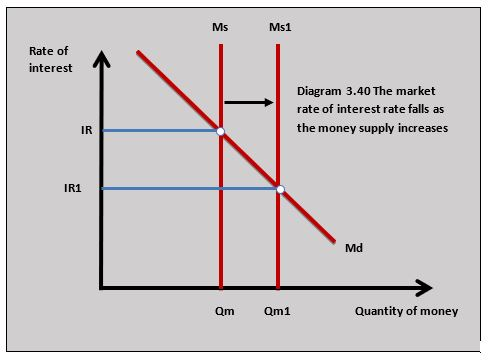
Quantitative easing was used extensively by central banks following the global financial crisis to increase aggregate demand. Quantitative easing involves central banks using open market operations to increase the money supply by purchasing large quantities of government and corporate bonds. The banking system uses the additional cash from quantitative easing to create credit and the money supply increases which reduces interest rates. The impact of quantitative easing is shown in diagram 3.40.As market interest rates are pushed down by quantitative easing this increases consumption and investment which increases aggregate demand and economic growth.
Expansionary monetary policy
Expansionary monetary policy is where the government reduces interest rates and increases the supply of money to increase consumption and investment to increase aggregate demand. Expansionary monetary policy is normally used to increase economic growth and reduce unemployment.
How the policy works
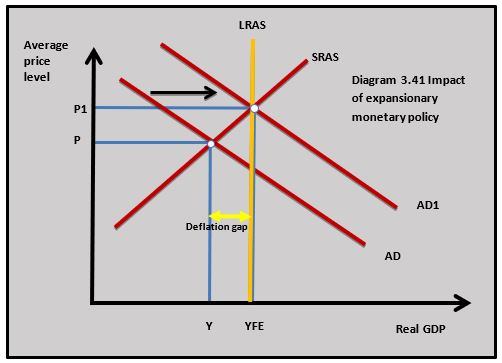
When the central bank reduces its base rate, it charges a lower interest rate to commercial banks and they pass on this reduction in interest rates to households and firms in the form of lower interest loans (personal loans, mortgages and credit cards). Lower interest rates will also mean less interest is paid on the money firms and households hold in banks. This causes consumption and investment spending to rise which increases aggregate demand. The increase in aggregate demand leads to a rise in GDP as firms respond by producing more. This also leads to an increase in employment.
This is sometimes called the monetary transmission mechanism and is shown in diagram 3.41 where a rise in aggregate demand and the subsequent rise in the demand for labour reduces unemployment. Expansionary monetary policy also closes the deflationary gap.
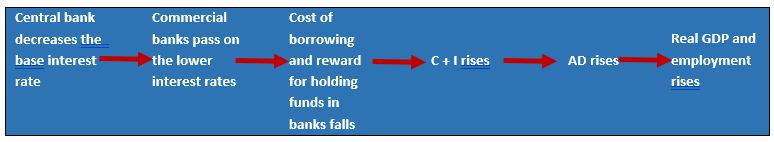
The flow diagram shows the monetary transmission mechanism as interest rates are reduced.Evaluation of expansionary monetary policy
Strengths
- Expansionary monetary policy is relatively quick to apply which gives it flexibility in the way it can be applied. If the central banks have evidence of a rise in unemployment or a fall in economic growth they can respond by immediately decreasing base interest rates.
- Monetary policy can be applied incrementally so it can be adjusted to changes in the economic growth and unemployment rate. If the growth rate is falling or unemployment is rising month by month, interest rates can be continuously adjusted to tackle the changes in those rates.
- Because central banks are independent of governments in most countries they have some freedom from government political influence. An independent central bank can stop a government from using expansionary monetary policy to increase economic growth in the run-up to an election to create economic boom conditions which could lead to inflation.
Weaknesses
- When an expansionary monetary policy is being applied there may be a rise in average price level and an increase in inflation. This is particularly true if the rise in aggregate demand leads to an inflationary gap. This is shown in diagram 3.41 where the increase in aggregate demand leads to an increase in the average price level from P to P1.
- When interest rates are very low and even close to zero the central bank has little room to reduce rates in response to a rise in unemployment or falling economic growth.
- Commercial banks may not pass on an increase in interest rates. When the central bank uses expansionary monetary policy and interest rates are being reduced commercial banks can often increase their profits by not passing on the interest rate reduction. The interest rate reduction means commercial banks pay a lower interest cost to the central bank but can still receive the same interest rate from their borrowers if they do not decrease their own interest rate.
- A decrease in the Interest rates in the economy relies on households and firms changing consumption and investment in response to the interest rate change. In a recession, low levels of business and consumer confidence may mean firms and households do not increase consumption and investment because they are worried about spending in an uncertain economic environment. This is particularly true of large investment projects by firms and the purchase of expensive items by consumers.
- There are time lags in the application of monetary policy that make it difficult to manage. It is estimated that it takes 18 months for the full effects of an interest rate change to have an impact on the macroeconomy. This means there can be policy mistakes in the application of expansionary monetary policy. For example, a central bank might decrease interest rates and see little increase in consumption and investment in the short run so the central bank might cut interest rates again and this leads to a surge in consumption and investment which causes inflation.
- An expansionary monetary policy where interest rates are reduced can lead to a depreciation in the exchange rate as currency investors sell the domestic currency because of the lower interest returns they receive from domestic banks. As the exchange rate depreciates it can make imports more expensive and this adds to inflation.
On March 2020 the European Central bank (ECB) announced €750 billion Pandemic Emergency quantitative easing. The ECB is planning to purchase a mixture of financial assets in the form of the private sector and public sector bonds. This significant move by the ECB is in response to the economic slowdown caused by the Covid19 crisis.
By buying bonds in the financial markets cash enters the system which, through the money multiplier, increases the money supply and drives down interest rates. The ECB hopes this aggressive expansionary monetary policy will increase consumption and investment and stimulate economic growth to mitigate some of the slowdown caused by the pandemic. Quantitative easing was used by many central banks as part of expansionary monetary policy after the financial crisis in 2008.
Questions
a. Define the term quantitative easing. [2]
Quantitative easing involves central banks using open market operations to increase the money supply by purchasing large quantities of government and corporate (private sector) bonds.
b. Explain how quantitative easing increases the money supply. [4]
When the central bank buys government and corporate (private sector) bonds more money is injected into a country's financial system and this increases the country's money supply. The money supply will be further increased through credit creation and the money multiplier.
c. Using a diagram explain how quantitative easing can lead to a fall in market interest rates. [4]
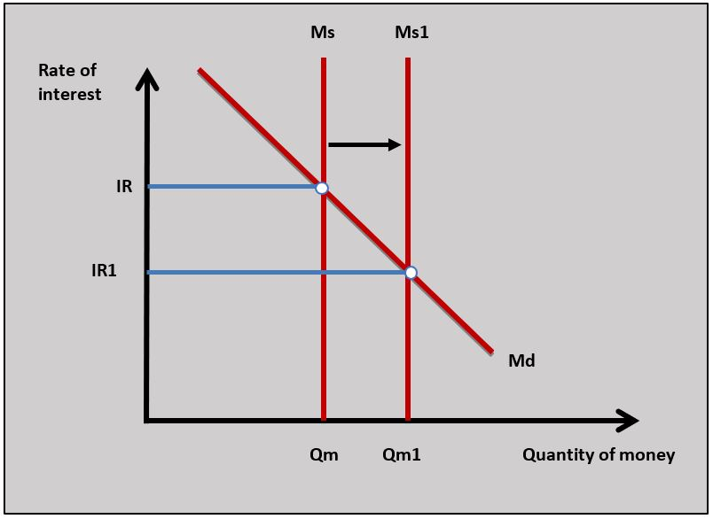
When the central bank buys bonds as part of quantitative easing it uses cash which increases the supply of money in the economy. This is shown in the diagram where Ms shifts to Ms1 in the money markets which causes the market interest rate to fall from IR to IR1.Investigation
Research the use of quantitative easing by another central bank.
Contractionary monetary policy
Governments and central banks apply contractionary monetary policy when they increase interest rates and reduce the supply of money to reduce the rate of inflation.
How the policy works
If inflation rises in the economy the central bank raises its base rate which is the interest rate it charges to commercial banks. The commercial banks then pass on the higher interest rate to their customers and this raises interest rates throughout the economy. Households and firms start paying higher interest costs on loans and receiving greater interest returns on money held in banks.
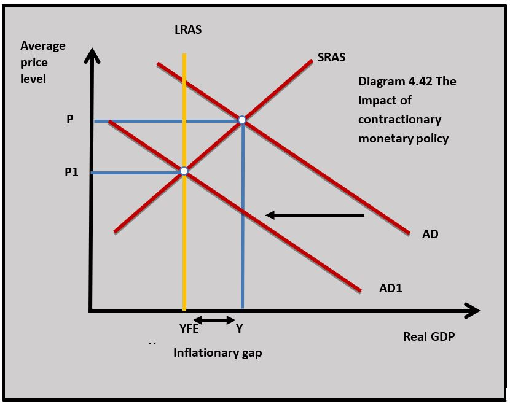
As the interest rates rise throughout the economy consumption and investment fall and this reduces aggregate demand. As aggregate demand falls in an economy the average price level falls fromacro economyd inflation falls. In diagram 3.42 the fall in aggregate demand closes the inflationary gap as output falls from Y to YFE.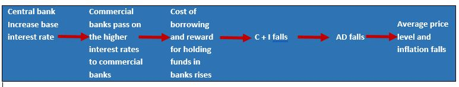
The flow diagram illustrates the monetary transmission mechanism of contractionary monetary policy.
Evaluation of contractionary monetary policy
Strengths- Contractionary monetary policy can be applied quickly which gives it flexibility as a policy. If the rate of inflation rises the central bank can react almost immediately to increase interest rates to reduce aggregate demand and inflation.
- Contractionary monetary policy can be applied incrementally so it can be adjusted to changes in the inflation rate. If the inflation rate is rising month by month, interest rates can be continuously increased to tackle the problem.
- Because central banks are independent of governments in most countries they have some freedom to apply contractionary monetary without political influence. For example, a rise in inflation might need a rise in interest rates but the government might not want to do this for political reasons, but an independent central bank can still increase the rate of interest to reduce inflation.
Weaknesses
- When a contractionary monetary policy is being applied the fall in aggregate demand may lead to a reduction in economic growth and even a recession and this will lead to a rise in unemployment. This is shown in diagram 3.42 when aggregate demand falls from AD to AD1 because of a rise in interest rates.
- An increase in interest rates by the central bank in its application of contractionary monetary policy may not be passed on by the commercial banks. The lending market is competitive and if banks are competing to make loans to new customers, they might not pass on the increase in interest rates so they can keep attracting new borrowers with lower interest rates.
- Similar to expansionary monetary policy, there are time lags in the application of the policy that makes it difficult to manage. The estimated 18 months it takes for the full effects of an increase in interest rate to have an impact on the macroeconomy leads to policy mistakes. If the government increases interest too much this can lead to a fall in economic growth and even a recession.
- An increase in interest rates as part of contractionary monetary policy can lead to an appreciation in the exchange rate as foreign currency investors are attracted to the domestic currency by higher interest rates in domestic banks. As the exchange rate appreciates it makes export prices more expensive and import prices cheaper and this can lead to a balance of payments current account deficit.
In 2018 the central bank base rate in Turkey was increased from 17.5% to 24% in a bold attempt to tackle soaring inflation. The rate rise came despite pressure from President Erdoğan who strongly opposed the action of the central bank. This contractionary move by the bank was in response to a spike in inflation that increased to nearly 25%.
The rate rise announced by the central bank caused an appreciation in the Turkish Lira which rose nearly 3% on the news. President Erdoğan was not alone in voicing concerns about the rise in interest rates which increased borrowing costs for hard-hit businesses and consumers. The central bank argued that allowing Turkish inflation to get out of control would bring huge costs to the economy.
Worksheet question
Question
Using a real-world example, evaluate the effectiveness of monetary policy to reduce inflation. [15]
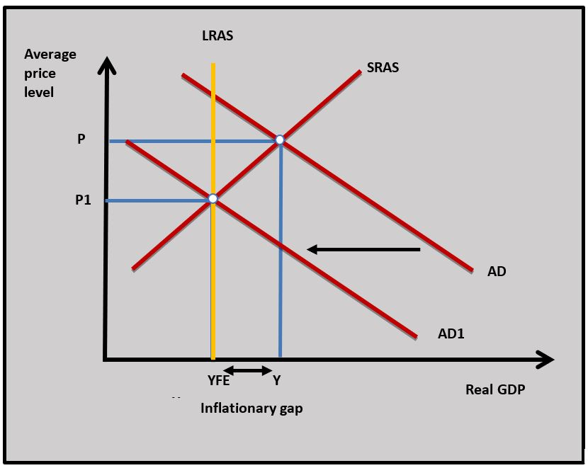
Answers might include:- Definitions of monetary policy and inflation.
- A diagram to show the impact of contractionary monetary on inflation.
- An explanation of how the Turkish central bank increasing interest rates reduces aggregate demand from AD to AD1 which causes the average price level to fall from P to P1 and this leads to a fall in inflation.
- An example of how monetary policy is applied to reduce inflation. In this case in Turkey.
- Evaluation might include discussion of the problems of applying contractionary monetary policy such as falling AD and recession; commercial banks not passing on a rise in interest rates; time lags leading to policy errors and an appreciation in the exchange rate.
Investigate inflation in Turkey and how the Turkish central bank used contractionary monetary policy to deal with high inflation.
The money transmission mechanism associated with monetary policy shows how changes in interest set off a chain reaction throughout the macroeconomy. A cut in interest rates leads to a rise in consumption and investment which leads to an increase in aggregate demand which can cause a rise in economic growth and the average price level. The same interest rate change will affect the exchange rate, the price of government bonds and the stock market. The series of reactions brought about by a change in monetary policy show how interrelated the macroeconomy is. This is a challenge for policymakers because of the range of consequences a change in interest rates can have. Some of these consequences might be intended and some might not.
Which of the following is not true about monetary policy?
Taxation is fiscal rather than monetary policy.
Using the data below, which of the following is the value of credit created?
Minimum reserves requirement 16%
1/0.16 x
Which of the following is most likely to lead to a rise in interest rates in an economy?
Increasing the minimum reserve requirement reduces the commercial bank's ability to create money which reduces the supply of money and increases interest rates.
Which of the following best describes a situation where the central bank sells government bonds to increase market interest rates?
When the central bank sells government bonds it is called open market operations.
Which of the following is a strength of contractionary monetary policy?
Which of the following is least likely to be the function of a country's central bank?
The central bank does not lend to or accept funds from businesses other than commercial banks.
Which of the following is least likely to be true in the diagram?
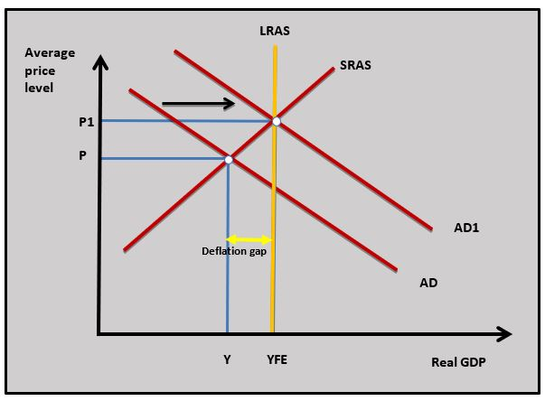
An increase in the minimum reserve requirement will reduce the supply of money and increase interest rates which will reduce AD.
Under what conditions is expansionary monetary policy most likely to be effective in increasing aggregate demand?
A depreciating exchange rate makes export prices fall and can increase the net export component of aggregate demand.
Which interest rate does the central bank change when it is applying monetary policy?
The central bank changes the base interest rate when it is applying monetary policy. This is the interest rate it charges to the commercial banks.
Which of the following is the most likely consequence of an increase in a country’s money supply?
As the money supply increases the equilibrium market interest rate decreases.
 Twitter
Twitter
 Facebook
Facebook
 LinkedIn
LinkedIn